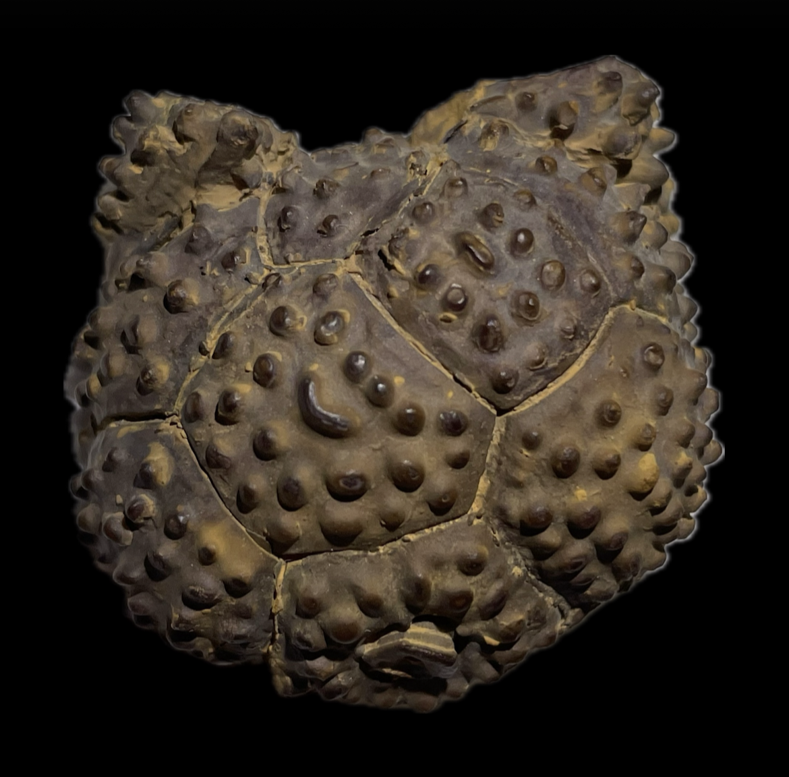
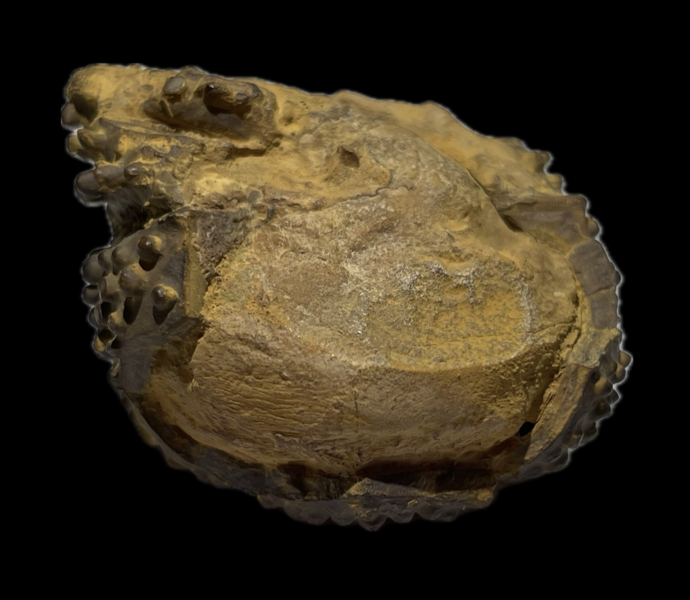

HOME
Ethelocrinus sp.
• Pennsylvanian
• Pumpkin Creek Limestone, Dornick Hills Group
• Oil Creek Outcrop, Johnston County, Oklahoma, USA
Size: 4.5 cm across

Copyright © 2024 by Samuel Kim, all rights reserved